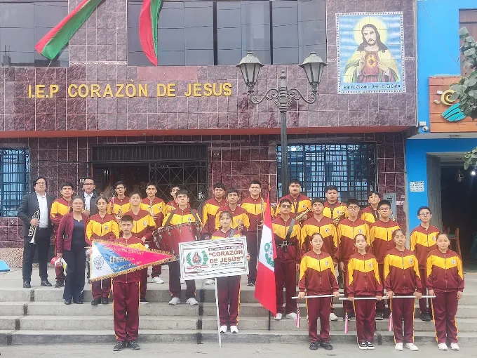

Inicial
De 3 a 5 años. Aprendemos jugando, cantando y descubriendo que Dios nos ama.
Matrículas 2027 abiertas
Un colegio de familia en Santa Clara donde cada niño es conocido por su nombre y acompañado con amor.
Desde el primer día de clases hasta la graduación, en un mismo colegio.
De 3 a 5 años. Aprendemos jugando, cantando y descubriendo que Dios nos ama.
1.° a 6.° grado. Lectura, matemática y valores con seguimiento cercano.
1.° a 5.° año. Preparación para la universidad y para la vida.
«Dejen que los niños vengan a mí».Mateo 19:14

Nuestros alumnos desfilan, tocan y participan en actividades que fortalecen el carácter y el trabajo en equipo.
Cuatro pasos, y te acompañamos en cada uno.
Edita estos textos cuando haya algo nuevo.
Los alumnos presentan sus proyectos a las familias.
Celebración con oración, música y compartir.
Cupos limitados por aula. Pide informes con tiempo.
Déjanos tus datos y te responderemos por WhatsApp.
📍 Av. Independencia 309, Santa Clara, Ate
📞 999 999 999
🕗 Lunes a viernes, 7:00 a. m. a 5:00 p. m.